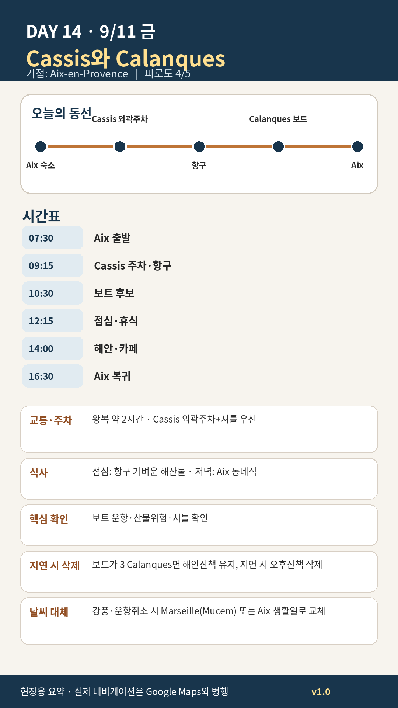

Day 14 · 9/11 금 · Aix Phase 4 최종

카드의 지도영역은 일정 순서를 보여주는 개요이며 내비게이션이 아닙니다. 실제 도보·운전 경로는 Google Maps에서 다시 계산하세요.
시간표
| 시간 | 일정 | 실행 포인트 |
|---|---|---|
| 07:45 | Aix 출발 | 물·모자·멀미약·교통 확인 |
| 08:45 전후 | Gorguettes 주차 | 중심주차 경쟁 회피 |
| 09:00–09:25 | 셔틀로 항구 | 배차·막차 확인 |
| 09:30–10:15 | 항구·구시가지 | 출항여부 먼저 확인 |
| 10:30–11:50 | 5 Calanques 보트 | 강풍·파도에 따라 3 Calanques 축소 |
| 12:00–13:00 | 가벼운 점심 | 긴 코스식 금지 |
| 13:10–15:30 | Bestouan·항구·카페 | 수영·쇼핑은 선택 |
| 15:40–17:20 | 셔틀·Aix 귀환 | 저녁 전 1시간 휴식 |
피로도
4/5
이 날의 메모
Cassis와 Calanques — 항구와 석회암 해안
Route des Crêtes 장거리 드라이브와 육상 장거리 트레킹은 추가하지 않는다.
Marseille 대체규칙
- 보트취소·폭우·강풍으로 Cassis의 핵심가치가 낮으면 Aix–Marseille L50로 전환한다.
- Vieux-Port → Le Panier 45분 → Mucem 2시간 → Fort Saint-Jean만 보고 귀환한다.
- Cassis와 Marseille를 같은 날 결합하지 않는다.
오늘 확인할 것
- 핵심 실행
- Cassis·Calanques
- 권장 출발
- 07:30 출발
- 완충
- 주차·셔틀 45–60분
- 최고 리스크
- 강풍·보트취소·산불통제
- 우선 삭제
- 오후 해안산책
- 대체안
- Marseille/Mucem 또는 Aix 생활일
- 식사·휴식
- 항구 점심
- 잠금 필요
- 보트·주차
이 날의 장소
일자별 시간표와 본문 표기에서 찾은 것이다. 하루의 전부가 아니라 장소 카드가 있는 것만 담는다.